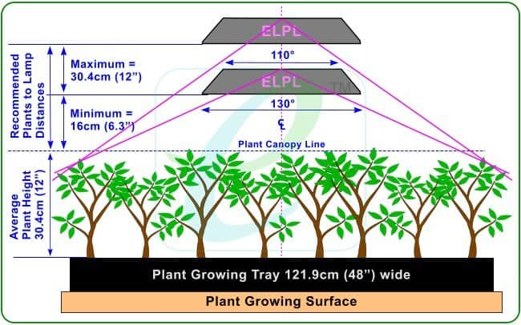
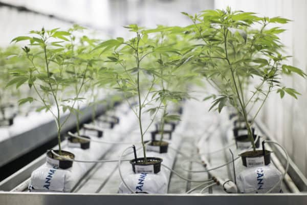

An excellent growing environment replicates nature. If you wish to grow a cannabis plant successfully, you have to make sure it has everything it needs. When creating an indoor grow system, one of your primary focuses should be getting a proper air supply. This is where the grow room ventilation system comes in. In this article, we provide you with grow room ventilation ...
We have created a massive guide for Growing Cannabis Indoors in Canada, a fantastic resource for any new grower or seasoned grower who wants to tune up their trade.
When indoors, we have to take into account many variables. The basics are light, environment, growing style, and nutrients. It goes much deeper than this, of course, but these are where we start.
So you want to grow cannabis indoors with your newly minted official ACMPR license, your golden ticket to growing marijuana.
Once the initial excitement fades and it’s finally time to get to work, there’s a very good chance you’re thinking to yourself, now what?
If this is your first time growing, if it’s been a while since you’ve tested out your green thumb, or even if you just want to try out some new cultivation techniques, it’s normal to feel uncertainty about running an ACMPR grow op.
For those of you who haven’t completed a Health Canada ACMPR application but are interested, fill in your details below to learn more and start growing.
Would you like an ACMPR medical license to grow up to 500 plants at home?
Contents
An Introduction to the Marijuana Plant and Growing Cannabis Indoors
Indoor growing mediums are the substrates that indoor cannabis growers typically use to grow their indoor cannabis. Cannabis is a plant with a taproot (a robust and vertical root that allows the plant to grow deep in the ground). Cannabis growers must choose if they want to buy or mix their soil that would typically contain its nutrients or use a neutral growing medium and have to add nutrients and water.
What is the best way to create optimal indoor grow environments with the highest yields and healthiest cannabis plants?
- Light
- Temperature
- Ventilation
- Reflective material
- Humidity control
Growers are proud of what they do, and the crop is precious. Mastering climate control in the grow room should be a top priority. Many growers are unaware of how fast a crop can turn nasty, especially if they’re beginning to transition from hobbyist to more significant operations. Some growers don’t realize how much more they could optimize their yields with proper grow room climate control.
Ventilation
A grow room ventilation system maintains an airflow between the indoor and outdoor environment. The system also has a mechanism to maintain airflow within the grow room. To maintain airflow, the most common grow room systems combine exhaust fans with ducts or pipes.
Fan & Filter Kits
All you need to do is to have the correct type of grow tent ventilation system. This type of grow room ventilation system will allow your plant to grow without any hassle. The right amount of light and air is essential for your plants. A grow tent ventilation system with great fans and filters ensures that you have the right amount. It also checks for humidity in the air.
Filters
A fan installed in the exhaust system maintains low pressure, and the exhaust air is emitted through the fan and not through any other openings. If you are growing strong-smelling plants, you can also integrate a carbon filter into your extractor fan system. The tent’s unpleasant odors are eliminated, so the exhaust air is nearly odorless. Fresh air is vital for optimal plant growth. The exhaust air system includes a fan to remove old, unused air from the grow tent so that new, or intake, air can flow.
Inline Fans
Your inline fans are crucial when growing indoors. You can risk overheating your grow area and causing damage to your plants by not having the right fan. Inline fans should include the most efficient diameter size, high cubic feet per minute, and low noise output measured in decibels.
Wall Fans
Oscillating fans are only for keeping the air moving. You don’t need to have insane power or fan diameters. These grow tent oscillating fans can be mounted on a wall or placed on a stand inside a tent to ensure good air circulation in the room and versatility.
Ducts, Reducers & Flanges
Ducting is essential for venting dirty air, CO2, and other impurities from your grow room. Your airflow will stop if you don’t have suitable ducting. Your garden will stagnate if it doesn’t have proper airflow. Make sure that your ducting is ready to handle all the airflow.
Ducting is necessary to get the air to any location. Some ducting will even reflect light from the ducting to cool the air passing through it. Duct flanges in sizes from 4 to 12 inches are suit almost any size grow tent.
There are many reasons why a ducting reducer may be necessary. You might want to make small holes in your building, but a fan is too powerful. A reducer allows you to accomplish this. They are durable and efficient and can be used for intake and extraction fans and carbon filters.
Controllers, Timers & Meters
Lighting controllers and timers are used for automating light cycles. Grow light controllers and timers are used to adjust lighting, control ballasts, monitor CO2 levels and manage cooling and heating. These devices automate the system and ensure that your lights are on a consistent schedule for daily growth. A light meter is used to measure how much light is reaching your plants.
Fan Speed Controllers
The fan controllers can manage the ventilation in your grow rooms 24/7. Fan controllers can vary depending on how many fans you have, what type of fan you have, and where you operate.
Temperature Controllers
Many growers find it difficult to control the heat in their grow rooms. Grow lights give our plants lots of light and heat. Large grow lights can also be very hot.
You can extract the stale air from your home and bring in fresh air to maintain your temperature, humidity, and CO 2 levels.
In winter, you will likely need a heater. You will need more air in summer. However, it is essential to remember that your grow room cannot be colder than the air you are drawing in if you rely on-air exchange.
Under optimal conditions, you should maintain a standard, ventilated, and well-ventilated room at 75-85 degrees Fahrenheit. Adjust the temperature to suit your plants’ needs.
CO2
What is CO2? How can it help your plants?
Plants will experience a significant growth increase if they have been given the best possible environment. Higher temperatures can be achieved if CO2 levels remain between 1000-1200ppm. Growers must keep temperatures low to prevent heat stress.
Indoor gardeners are constantly looking for innovative ways to increase their yields. The addition of CO2 in your grow area is a simple way to increase your yields and produce strong, healthy plants.
Keep living spaces separated from the grow area well sealed. Your CO2 enrichment system can be turned off when the lights go out to prevent plants from absorbing carbon dioxide at night. You can save money by having your CO2 enrichment switch on half an hour after your lights turn off and then turn it off half an hour before your lights go out.
CO2 Bags & Bottles
CO2 bags provide the easiest and most natural way to add CO2 to your grow space. CO2 bags can produce carbon dioxide 24 hours per day without refilling bottles and using expensive production units. They function through photosynthesis, which is the process whereby plant leaves make carbohydrates.
CO2 bags provide the easiest and most natural way to add CO2 to your grow space and can produce carbon dioxide 24 hours per day without the need to refill bottles and use expensive production units.
CO2 Generators & Burners
For grow rooms greater than 10’x10′, CO2 generators and burners are beneficial. For a combustion reaction that produces heat and CO2, either liquid propane or natural gas, burners use liquid propane. Carbon dioxide enrichment requires air circulation to ensure even distribution to absorb and utilize the CO2. For all your CO2 enrichment requirements, check out our extensive selection of CO2 burners and generators.
CO2 Controllers
Your indoor crop should thrive if CO2 levels are kept at 1,500 parts/million in your grow room or tent. Anything less is toxic for plants and can limit growth. These levels of CO2 are safe for humans.
Monitors allow you to see the level of your grow space. Attached to the appropriate equipment, such as tanks with regulators to grow tents, electronic CO2 generators, or burners for commercial operation, a CO2 controller allows you to set the level and have it maintained automatically. The regulators release CO2 from the tanks. You’ll need to refill them as necessary. The controller can command CO2 generators to produce and distribute CO2.
Humidity Control
Many novice growers are familiar with controlling the temperature in a room. Many people may be familiar with air circulation. But novices are often unable to maintain the correct relative humidity (RH) in their grow rooms.
Humidity changes when you turn your grow room lights on and off, and most growers who are beginners don’t know that. Many growers neglect to pay attention to humidity until they experience diseases like bud rot and powdery mildew.
Humidifiers
You can control many factors that will ensure healthy plants and high yields when growing weed in a tent. Air moisture is an essential factor. You can control humidity to maintain a healthy environment for your plants by using a humidifier.
Dehumidifiers
The relative humidity of cannabis cultivation is an important variable. Even first-time growers should be aware of it to get a good harvest. Warm temperatures are better for cannabis plants than cold. Therefore, it is essential to control humidity in your growing room to ensure that your plants thrive.
Atomizers
Although fertilizers are beneficial for plants, they can sometimes encourage the growth of weeds. The soil nutrients are absorbed by weeds, which can compete with plants. It is therefore necessary to apply fertilizer more precisely directly to the cannabis plants. An atomizer is needed to spray fertilizers.
Air Conditioner
An indoor space filled with horticulture lamps can also produce incredible heat. Many grow environments without proper ventilation and air conditioning would see temperatures increase. Marijuana grows best at temperatures between 70-80 F 21-27 C.
Odor Neutralizer
Odor neutralizers counter the odors associated with cannabis and are natural and practical solutions to control cannabis odors in indoor grow rooms.
Gels & Sprays
These products should not be placed in a growing area or tent that houses flowering cannabis plants. These potent odor neutralizers can alter or reduce the taste of cannabis plants over time. These are very effective in neutralizing odors that may be outside of the grow area.
Ozone
Ozone generators are sophisticated machines that allow the conditions in Earth’s outer ozone layer to be replicated. With the ability to eradicate mold, battle pathogens, and sterilize equipment, ozone generators present some distinct benefits. Ozone generators are becoming more portable and more affordable. Now, the novice home grower can take advantage of the benefits ozone generators provide.
Air Sanitizers
Carbon air filters, HEPA air filters, and odor neutralizers are the three most popular and economical ways to reduce grow room odors.
Before we get into the gritty details of how to grow marijuana plants in Canada, like nutrients and pH, it’s important that you understand the basics.
You can’t expect to harvest a successful crop if you don’t at least have a general knowledge of cannabis strains, seeds, clones, growth stages, and male vs. female plants.
Selecting the Right Marijuana Strains
We know that most of you have a solid understanding of the marijuana strains sativa vs indica from past experience, but let’s do a quick recap.
Sativas are known to have a more energizing effect and create a head high that usually leaves you feeling more alert, uplifted, productive, and even creative. In terms of how they look, sativa plants are generally taller and slimmer with long, skinny leaves.
Indicas create a body high that’s relaxed and great for sleep aid and pain relief. Many indica strains are described as having a “couch-locking” effect, which basically says it all. These tend to be stout and bushy plants with short, wide leaves.
Then there are hybrids that have the characteristics of both. When deciding on your cannabis strains, try to not only focus on the high effects but also the growing tendencies – if you’re limited to ceiling space in your indoors area, tall and skinny sativas aren’t the best choice.

Choosing Between Cannabis Seeds vs Marijuana Clones
Deciding whether to start with cannabis seeds or marijuana clones calls for looking at the pros and cons for each.
Beginners often start with seeds since this is the more traditional way of doing things. Many growers claim that it brings them closer to their plants; there’s a lot that comes out of watching each plant develop from a tiny seed into a green leafy masterpiece.
However, there are some major benefits to starting a grow op from clones. The main advantage is that using clones gets your indoor operation up-and-running much faster than seeds. So if you’re looking for a quick turn-around, this is the way to do it.
With seeds, you can never be 100% sure that you’ll end up with female cannabis plants. But with clones, you always know from the beginning since you’ll be taking clippings from a strong mother plant.
Overall, starting with clones is the better choice since it’s more reliable and gets your operation for growing marijuana indoors off the ground much faster.
For seeds, we recommend checking out Seedsman. They have one of the largest selections in the world and are the most reliable.
Understanding Plant Growth Stages
Whether your plan is for growing indoors 500 medical cannabis plants or 50 plants or 50 plants with your ACMPR Canada grow license, each unique plant growth stage calls for different amounts of light, nutrients, water, and overall attention.
There are 4 primary stages to the entire plant life cycle when you start from seeds:
- Germination
- Seedling
- Vegetative
- Flowering
Germination
The first stage to growing marijuana indoors, germination, is the shortest and typically takes between 1 and 3 days.
Germinating a cannabis seed just requires moisture and warmth, and it can be as simple as using wet paper towels, two kitchen plates, and a heating mat. We’ll get into the step-by-step process of germination later on.
The germination phase allows the seed to “pop”, and once that happens it’s ready to be placed in soil (or whatever media you’re using).
Seedling
Next comes the seedling phase, which calls for 18 hours of light each day. During this growth period, your cannabis plants will start to develop leaves and roots.
Seedling can take anywhere between 1 and 4 weeks depending on how large you want your plants. The more time your cannabis plants spend as seedlings, the bigger they’ll become.
Vegetative
Technically, seedlings fall into the vegetative stage, so you’ll continue to keep your lights running for 18 hours/day. This is an important time for your plants to start developing, setting the foundation for your plants to shoot up 3 to 4x bigger as soon as you switch over to flower.
You’ll need to transfer your cannabis plants from small pots to larger ones at some point during veg so that their roots have room to stretch. You’ll also need to increase your watering.
Flowering
To transition into the flowering stage, the main thing you need to do is switch from 18 hours to 12 hours of light per day. This is the final growth phase and the most exciting one since it’s when the buds begin to really take shape.
The flowering stage can take anywhere from 8 to 12 weeks when growing marijuana indoors. You probably won’t notice much bud growth until week 6 or 7, but in some cases cannabis buds can start forming as early as week 2.
The Difference Between Male and Female Plants
Determining the sex of each of your plants is a crucial step for success in your grow op. Make sure to separate males from females or the male plants will pollinate the female ones.
This causes them to produce seeds, and buds filled with seeds aren’t ideal for anyone. The smoke from seeded buds is harsh, unpleasant, and less potent.
If you’re starting from seeds, you want to make sure that they’re feminized, but even this doesn’t always guarantee that you’ll end up with female plants.
This is why it’s so important to be able to identify the sex of each cannabis plant, which usually starts showing itself around 4 weeks after germination. By week 6, you should be able to confidently determine whether each plant is male or female.
Differentiating males from females is fairly easy, but you will need a magnifying glass. Cannabis plants show their sex by an initially small growth that pushes out where the leaves’ branches extend from the stalk (AKA nodes).
Male plants develop little pollen sacks in the plant nodes and female plants develop stigma to catch the pollen spread by the males. The pollen sacks resemble small round balls and the stigma resembles small hair-like appendages.

What are Trichomes?
Plant trichomes are the crystals that form on the little hairs covering the cannabis buds. They’re the mechanisms that are responsible for cannabinoids (like THC and CBD) and terpenes, two things that ultimately create the amazing flavors and aromas of quality bud.
It’s important to pay close attention to these trichomes, especially during the final stages of indoor growth. They’ll change from a clear, translucent color to cloudy white to amber. Once they hit an orangish hue, this is when it’s time to harvest.
Choosing an Indoor Growing System for Cannabis
There’s a lot that goes into deciding on an indoor growing system, but it mainly has to do with how much space you have available and how many cannabis plants you plan on growing within your available space.
To determine the exact square footage of space you’ll need, you need to have a rough measurement of the plant canopy.
First, measure the space that you actually have available. Then, determine how many full-grown plants can develop comfortably within that space, keeping in mind that the absolute minimum is 1 square foot per plant. It’s a good idea to physically layout the largest pots you’ll be using.
Once you’ve taken your measurements and gotten a rough outline of the space, it’ll be easier to make the decision between a grow tent vs grow room (or greenhouse) vs grow box.
Choosing a Grow Tent
An indoor grow tent is perfect for ACMPR growers who value convenience. Tents are easy to set up, easy to use, and they’re an amazing tool for climate control.
The main benefit of grow tents, though, is that they come in a variety of sizes. This means that once you’ve taken the rough measurements of your plant canopy, you just have to choose a tent size that works best for you.
Since the best tents are completely sealed off, they offer superior climate control to other room setups. Plus, there’s no need to ruin the integrity of your home since you won’t have to drill holes or mount hooks for hanging lights and ductwork.
Basics of a Grow Room
You’ll need a grow room if you’re a larger cannabis operation – even the biggest grow tent might not cut it. When you grow cannabis indoors, a tent won’t be able to hold hundreds of plants, so you’ll want to think about upgrading to a bedroom, garage, or basement instead.
Utilizing the space that you already have means that there’s no need to invest in a tent, but you will need to purchase reflective material to cover the walls, ceiling, and floor.
Aside from the added space, the main benefit of equipping a room is that you can utilize what’s already there, like power outlets and windows for ventilation.
What is a Grow Box?
Another option is using a grow box, which is only suitable for super small operations – you won’t be able to house hundreds (or even dozens) of cannabis plants in one of these. But if you’re looking for a small space that’s completely automatic and lets you use your smartphone as an environmental controller, this is a solid choice.
Grow Room Temperature and Humidity Control
We could go on for ages about the importance of grow room climate, so we’ll try to stick to the basics. When growing indoors, the first thing you need to know is that maintaining a stable temperature and humidity is an essential aspect of your grow space.
If you fail to do this, you’re risking some problems that could potentially lead to the demise of your entire cannabis crop, like root rot, mold, plant scorch, and overdrying.
The next thing is make sure to invest in quality temperature and humidity controllers. A climate that’s too hot, too cold, too wet, or too dry is no place for your plants, but the good news is that you don’t have to go at it alone.
Controllers from Inkbird, Growtronics, and Titan Controls are handy tools for growing indoors, so use them. The tricky part of climate control is that the ideal settings change with each stage. But in general, both temperature and humidity gradually decrease as the plants get older.
To keep things as simple as possible, here are the climate basics you should follow:
- Ideal Temperature in Veg: 70-78 degrees F (daytime)
- Ideal Temperature in Flowering: 68-75 degrees F (daytime)
- Ideal Humidity in Veg: 45-55%
- Ideal Humidity in Flowering: 35-45%
At night when the lights are off, it’s OK to dip below this temperature range, but make sure to always keep the room at least 60 degrees F or higher.
Keep in mind, these are just general rules of thumb. For the cloning stage, your humidifier should be set to a much higher range (ideally between 75 and 85%), and near the end of the flowering stage when it’s close to harvest time, plants prefer it closer to 30%.
Grow Room Ventilation
Installing proper grow room ventilation is one of the most overlooked aspects of cultivating cannabis, but it’s a well-known fact that plants need fresh air to survive and thrive.
Think about it… In a weed plant’s natural growth environment, the air is constantly moving. Gentle breezes strengthen the plant’s stem and help the leaves to transpire. Plus, air movement minimizes the presence of pests and bugs.
Getting the air moving is just the first step to proper ventilation. You also need to introduce cool, fresh air into the grow space while expelling hot, stale air out. It might sound complicated, but it’s as simple as setting up an air exchange system with a basic intake fan, extractor fan, and some ducting.
If you’re using a tent, you’ll need to install ducting that matches the tent’s holes. You’ll run the ducting through the hole in the tent and secure the extractor fan so that it can take air from inside the tent and expel it outwards.
The intake fan will work similarly, but it’s better for it to be positioned in the lower tent hole (the exhaust fan should be higher). It’s crucial that you’re bringing in fresh air – it doesn’t count if you bring air into the tent from the next room over.
You might also want to think about installing a carbon filter into your ventilation system. It can be easily attached to the extractor fan, and it seriously downplays skunky odors.
Grow Room Monitors
It’s not entirely necessary to invest in a grow room monitor, especially if you’re running a small operation. But it’s definitely helpful. This little device is aimed at tracking all major aspects of the indoor climate, including temperature, humidity, and vapor pressure deficit (VPD).
VPD is the difference between the amount of moisture in the air and how much moisture the air can hold when it’s saturated. First-time cannabis growers don’t have to worry too much about VPD since this is a more advanced concept.
The best monitors deliver a cloud-based VPD chart and temperature/humidity readings so that you can manage your indoor environment from anywhere.
Grow Room Automation
There are a few simple grow room automation steps you can take to make your life easier. Now if you’re looking for complete automation, this will take some serious work, but it’s possible to automate bits and pieces to take some of the stress off your shoulders.
It’s essential that you use timers – not just for you, but also to keep your cannabis plants on the right schedule. Timers can be used for a variety of different tasks, like keeping fans, pumps, CO2 systems, and lights on a strict schedule.
The best part of switching from a completely manual system to one that utilizes digital or analog timers is that it won’t cost you much. For a small price, you can minimize labor and cut back on time you’d otherwise spend on repetitive tasks.
Another handy automation tool is the climate control meter. A digital environmental controller can monitor CO2, temperature, and humidity levels.
The Different Kinds of Grow Pots
Before you grab a pile of run-of-the-mill flower grow pots, you should learn the difference between standard pots vs smart pots vs air pots. Standard flower pots will work perfectly fine, but your cannabis crop might benefit more from another type of container.
Smart pots are made from breathable fabric and they’re designed to prevent plants from becoming rootbound. Once the roots reach the sides of the containers, they can still continue to develop since the fabric pot keeps them exposed to air (this is called air pruning).
The main drawback of smart pots is that soil dries out faster since there’s constant airflow. Many growers choose to double the pot size to prevent soil overdrying, which means you’ll need a much larger amount of your growing medium.
Air pots are basically the same as smart pots, but instead of being made entirely from fabric, these are plastic containers with small openings throughout to let air through. The biggest advantage of air pots over smart pots is that they’re sturdier and less likely to tip over.
If you do opt for standard flower pots, just make sure that they have drainage holes on the bottom. Sometimes you have to punch these holes out yourself, so it’s a good idea to check every pot.
Although the type of pot does matter to an extent, what’s more important is the size. For your cannabis plants to thrive, the roots need room for growth – this is why you’ll have to “up-pot” several times throughout the op and transfer your plants into larger containers.
A good rule of thumb to follow for deciding on pot size is 7.5 liters for every 30 centimeters of plant height. And another helpful hint – red solo cups are the perfect size for seedlings (just be sure to cut drainage holes in the bottoms).
Marijuana Grow Kits
If you’re an ACMPR grower who values convenience, you might want to start browsing around for a marijuana grow kit. Buying a complete kit is the perfect solution if you’re brand new to growing marijuana indoors or you’re not interested in mixing and matching equipment.
Most kits for growing indoors include a light, a tent, and a ventilation system (carbon filter, inline fan, extractor fan, and ducting). You will have to buy your grow medium, pots, and other odds and ends, but all the major equipment is taken care of.
Growers who do opt for a complete kit should make sure about the quality of the tent that’s included. Tents range drastically in quality, and there’s nothing more frustrating than a zipper that constantly snags or light leaks that hinder your cannabis plants’ development.
The Different Types of Grow Lights for Indoor Growing in Canada
Deciding on the best grow lights is one of the most common struggles faced by Canadian growers. Unfortunately, we can’t sit here and tell you that one type of light is better than the rest – every situation is different and there are a lot of considerations with your light setup.
There are two main categories of lights – high-intensity discharge (HID) lights and T5 fluorescent. Of the four main light types we’ll be focusing on, the first three are HID grow lights:
- Light Emitting Diode (LED)
- High-Pressure Sodium (HPS)
- Ceramic Metal Halide (CMH)
- Fluorescent (T5)
Proper Grow Light Setup
Before we get into the details of each grow light setup, you should have a basic understanding of how to put together your light system. There’s a science to finding the perfect distance from light to canopy; it depends on the type of light you’ve chosen, the wattage, and the room layout.
It’s especially important that you pay close attention to bulb wattage and compare it to square footage. A good rule of thumb to follow is that for every square foot of the plant canopy, your light should deliver 50 watts.
This is the rule for HID grow lights like HPS and CMH bulbs, but since LED bulbs are less intense, you’ll get optimal yields from 50 to 80 watts per square foot.
Let’s do some basic math. If your plant canopy measures 4 feet by 4 feet (that’s 16 square feet), you’ll want to make sure that your light intensity for that space is at least 800 watts (a minimum of 50 watts per square foot).
If you’re using an LED light, you’re better off with a minimum of 80 watts per square foot, so that’s a total of 1280W.
***Make sure you’re not measuring the dimensions of the overall room itself – make sure to take the measurements of the actual plant canopy.
The distance you should be hanging your lights from the canopy is a bit more complicated – it depends on wattage as well the type of bulb (high-intensity bulbs run much hotter than LEDs).
Here’s a quick guide on the ideal distance in inches to hang your indoor grow lights (measured from the top of the canopy to the bulb):
- 400W HID: 12-19”
- 600W HID: 14-25”
- 1000W HID: 16-31”
- 250-400W LED: 16-30”
- 450-550W LED: 20-30”
- 600-850W LED: 24-26”
- 900W+ LED: 26-42”
- T5: No more than 12”


How Much Light for Vegetative Stage?
The vegetative stage is vital for plant development – think of it as the time for your cannabis plants to get “big and strong”. For veg, you should be following the 18/6 rule – 18 hours of light, 6 hours of darkness. As long as your plants are getting more light than darkness, you could essentially keep them in veg forever.
Flowering Light Cycle
The flowering stage is triggered when your cannabis plants are given no more than 12 hours of light and no less than 12 hours of darkness. It won’t be until you let your plants have at least 12 hours of continuous darkness that they’ll enter the flowering stage and start to produce buds.
LED Grow Lights
In our comprehensive LED grow lights guide, we talked about a lot of perks to using LEDs in your operation. The most obvious benefit is energy efficiency, but there’s more to it than just lower hydro bills.
Here are a few more benefits of opting for an LED lighting system. LED lights:
- have a longer average lifespan than other light types
- give off a minimal amount of heat and harmful wavelengths
- produce a balanced, full spectrum of light
- eliminate the need to install an additional cooling system (as you’d need to with HPS or CMH bulbs)
Before you go and assume that LEDs are completely flawless, you should also know about the drawbacks. The first is that they’re expensive, but the good news is that the high initial cost is offset by the average energy savings over time.
Aside from that, the main downside to an LED light system is that it produces directional light. The light that it gives off is like the beam of a flashlight, and the coverage area isn’t as large as you’d get from a higher-intensity bulb. But all in all, LEDs are a solid choice for anyone who wants to grow weed in Canada.
HPS Grow Lights
HPS grow lights are significantly more intense than LEDs, which is why they’re classified under the High-Intensity Discharge category. High pressure sodium lights are great for the flowering stage and can really help your cannabis plants to beef up for higher yields.
The best HPS lights give off the intense light that your plants crave, but they also give off a lot of heat. When not managed properly with a cooling ventilation system, the high heat output from an HPS light system can cause a lot of damage to a cannabis crop indoors.
If you have a super small grow area, you’re limited on ceiling space, or you’re unable to put in a decent ventilation system, then you’ll want to stay away from HPS lights. But on the other hand, if you want fat beefy buds and you can manage temperature, HPS lights will serve you well.
CMH Grow Lights
CMH grow lights are very similar to HPS bulbs. The main difference between the two is that HPS bulbs give off more light in the red spectrum,which is why they’re often called the “HID King” among Canadian growers.
However, ceramic metal halide bulbs do have a few advantages. The first is that they emit a more balanced color spectrum. Sure, HPS bulbs emit a red light that weed plants crave while they’re flowering, but CMH bulbs cater to every phase of the grow op.
The other perk of choosing CMH over HPS lights is that they’re longer lasting. Many CMH grow lights have a lifespan over 24,000 hours, which is significantly longer than the average 10,000 hours of HPS and standard MH bulbs.
T5 Grow Lights (Fluorescent Grow Lights)
Using T5 grow lights is considered the old-school way of doing things – within the past decade or so cannabis growers have gravitated to more advanced systems like HPS, CMH, and LEDs. But this doesn’t mean that T5s are completely obsolete.
T5 fluorescent grow lights are best used in the early phases of cannabis growth. They’re a great choice for seedling and veg when the plants are still small but should be replaced with a more intense type of light during flower.
Choosing the Best Reflectors for Lights
Reflectors for lights are hoods to direct more light to your cannabis plants. A little bit of light loss is inevitable; you can’t expect every single lumen to reach the plant canopy. But a quality hood is a way to minimize the loss of light and make sure that your plants are getting the bulk of it.
Reflector hoods come in a variety of shapes and sizes, but no matter which one you choose, the main goal should be to redirect light towards the canopy. They’re made from highly reflective material (look for one that’s 90 to 95% reflective) and some even feature a cooling design.
Most growers can get by with a simple open-design hood, which is basically just a pliable metal sheet that reflects the light downwards. But if you’re using a light system with high heat output, like HPS or CMH, it’s best that you choose an air-cooled reflector hood because you don’t want overheating.
Air-cooled indoor light reflectors have a glass sheet on the bottom with cool air flowing through the closed-off compartment. This cool air is eventually pumped into the room, perfect if you’re using grow bulbs that give off a lot of heat.
Get started on your medical grow license today!
Step 1: Enter your email to book your ACMPR license appointment today
- Compassionate Practitioners Required
- Help with Approvals
- Low Cost Renewals
- No Stress Appointments
Marijuana Nutrients for Growing Cannabis Indoors
Understanding marijuana nutrients is helped by the fact that marijuana plants are actually good at communicating to their growers. Instead of using words, they use physical signs to show that they have a cal/mag deficiency or they’re suffering from boron deficiency.
But sometimes figuring out how to diagnose plant problems isn’t easy, especially when your crop is riddled with different deficiencies. But it’s still important that you have a solid understanding of nutrient deficiency identification so that you can respond to problems the right way and get bigger yields.
To prevent deficiencies from happening in the first place, the key is to give your cannabis crop the proper dosage of nutrients (and don’t overdo it!). As long as you keep an eye on micronutrients and macronutrients and use a reputable nutrient brand, you should be fine.
Micronutrients for Plants
Micronutrients for plants are required in small quantities by your cannabis. They may not need as much of these, but they still need them. Our guide on nutrients for growing cannabis provides a list of kits and nutrient products you may want to use.
The 4 most important micronutrients are:
- Magnesium
- Calcium
- Iron
- Copper
If you only focus on the 3 main macronutrients for growing weed (we’ll get to those next), you’re setting yourself up for problems like magnesium deficiency and calcium lockout, and you’ll probably find yourself looking for answers on how to fix iron deficiency in plants.
Here’s a quick guide to the common signs of micronutrient deficiencies:
- Magnesium Deficiency: Light green/yellow coloring on the veins and edges of lower leaves/red stems
- Calcium Deficiency: Brown/bronze spots on leaves
- Iron Deficiency: New growth leaves turning yellow/white tips on leaves
- Copper Deficiency: Dark shiny leaves with purple and blue undertones
Just start browsing through plant problem pictures online and you’ll see that these are all common issues experienced by growers. But they can easily be avoided with the right nutrients and the right doses.
Macronutrients for Plants
So did you know the main macronutrients for plants are N-P-K, the three letters plastered across all weed nutrient bottles?
Macronutrients are the ones that are needed in larger doses to successfully grow cannabis indoors, and in this case, that’s nitrogen (N), phosphorus (P), and potassium (K). Every bottle of fertilizer will have an NPK value, which represents the ratio of nitrogen to phosphorus to potassium.
There’s a lot of debate within the ACMPR community on what these values should actually be – some growers say 9-4-5 is sufficient but others say that 3-8-7 is better. There’s no straight answer for this, it’s just important that you try to follow these rules:
- During the veg stage, phosphorus levels should remain at about 1/2 of nitrogen levels. Potassium should be close to 1/2-2/3 that of nitrogen.
- During the flowering stage, keeping nitrogen at 1/2 and potassium at 1/2-2/3 the strength of phosphorus is the best way to go.
Plant Nutrient Deficiency Identification
We’ve already covered some common signs of micronutrient deficiencies, but let’s take a closer look at the plant nutrient deficiency chart. Aside from the ones we’ve already covered, these are the most common signs of macronutrient-related problems:
- Nitrogen Deficiency: Yellowing and curling of older, lower leaves that eventually wilt and die (the entire plant may also look pale/lime-colored)
- Phosphorous Deficiency: Yellowing/curling of the lower leaves or dark brown/bronze splotches and spots
- Potassium Deficiencies: Yellowish/brownish edges of leaf tips that almost look like their burnt (can closely resemble light burn)

Organic Fertilizer
You may prefer organic fertilizer. One of the most amazing aspects of growing cannabis at home with an ACMPR license is that you have complete control. If you want to run an entirely organic operation, by all means, go for it.
A grow op that’s 100% organic means everything in the garden is derived from completely natural plant sources, including the nutrients. If this is something you’re interested in, Soil King is a great resource for growing organically.
Liquid Fertilizer
There are pros and cons to using liquid fertilizer (as opposed to fertilizer that comes in a dry powder). The main advantage of opting for liquid is that it’s easier to get precise measurements with your nutrient mixtures.
General Hydroponics is one of the best liquid fertilizer brands available in Canada – we’re loving their Liquid Nutrient Trio Soil Formula (which also comes in a soilless hydroponics option).
Dry Fertilizer
Dry fertilizer is the more cost-effective option, but the main drawback of powder-based fertilizers is that they don’t dissolve as well as liquid fertilizers. This isn’t usually a big problem, but if your powder doesn’t dissolve properly, the nutrients won’t be as effective for your cannabis plants.
One thing that’s really nice about dry fertilizer is that it’s typically just a 1-part solution. Many liquid nutrients come with Part A and Part B to prevent negative reactions between the elements. You don’t have to worry about this with powdered fertilizers.
***It’s important to note that pH plays a huge role in how well your plants are able to uptake nutrients. No matter how spot-on you get your fertilizer doses, it might not matter if your pH is off. We’ll talk about that next.
Choosing a Water Filter System for Growing Marijuana
You need to think about a water filter system. The water you use in your grow op DOES MATTER and most sources agree that filtering water before feeding it to plants is best.
Many growers assume that if their home’s water is safe for them to drink, then it must be safe for their cannabis plants. But this isn’t always the case.
That’s because all municipal water is treated with chemicals that your plants won’t like, and well water contains naturally occurring minerals like sulfur. These things won’t hurt us in trace amounts, but they can have a negative impact on a grow op.
It’s best to filter out these contaminants and start with a clean slate. The most popular way to do this is through reverse osmosis, but you can also use a carbon filtration system.
Still haven’t received your ACMPR license to grow? Let us help you by filling your info below.
Using a Reverse Osmosis System
A reverse osmosis system uses a water purification process often seen in homes for removing impurities from drinking water. The RO process uses a partially permeable membrane to remove ions, unwanted molecules, and unnecessary particles from H2O.
There’s a lot of debate on whether RO is good or bad for growing cannabis, but it really depends on the original state of your water. If you’re working with water that is relatively clean and pretty close to pure, then running the water through an RO system isn’t that necessary.
But if there are tons of dissolved salts in your water, then RO is kind of a must. You can find the best RO systems for an ACMPR grow op in our guide to using reverse osmosis for growing cannabis.
Carbon Filters for Water Purification
Another common water filtration method is to use an activated carbon filter (this is exactly how a Brita filter works). Activated carbon is one of the most absorbent materials on earth – it’s even strong enough to filter out tiny particles from water that passes through it.
What is a TDS Meter?
A TDS meter measures the amount of Total Dissolved Salts in a solution, which is measured in parts per million (PPM). Using a TDS meter will help you to determine the exact quantity of minerals and nutrients to add in, especially if you start your water at 0 PPM (it’s 100% pure).
What is a pH Tester?
If you want to grow great weed, then you need to pay close attention to your pH tester. pH is a measurement of how acidic or alkaline a substance is, and cannabis plants thrive within a specific pH range.
The real reason that pH is so important is that your plants won’t be able to process the nutrients that you give them if they’re suffering from pH problems. This is why it’s crucial to test your water’s pH and alter it accordingly using products like pH Up and pH Down.
There are a few ways to test your water, but turning to pH and PPM pens and meters is the easiest way to keep tabs on pH. Try to find one that measures PPM and pH in one easy-to-use pen so that you don’t have to keep switching from your TDS meter to your pH pen.
Growing Mediums for Cannabis | From Dirt to Hydro
Choosing between soil and soilless growing mediums might seem like an easy decision, but out of all the steps to growing cannabis, this one might be the most difficult. Your grow medium determines a lot – it’s what has to sustain the roots throughout the entire operation.
But what a lot of beginners don’t realize is that soil is just one of the potential choices. Basic potting soil, soil mix, or Promix are the best options for newbies, but there are also options for soilless mixtures like perlite and coco noir.
To grow cannabis in soil tends to take a bit longer to harvest than coco or hydro, but the overall taste and aromas are often strong with soil-grown bud.
Potting Soil & Soil Mix
It’s hard to go wrong with your standard, run of the mill potting soil or potting mix, but before you start filling your pots, there are a few things you should know. There are several factors in differentiating “good” soil from “bad” soil, including:
- Texture
- Water retention
- Drainage
- Nutrient makeup
- pH
The best soils have a balanced composition of sand, silt, and clay with a pH close to 7, which is neutral. If you’re not on a super tight budget, you’ll want to go with a soil mixture called loam. Loam soil has great drainage and water retention, plus it has high oxygen levels and it’s easy to work with.
Promix
Promix is a household name in the growing community, so this should be at the top of the list of considerations if you’re looking for a soil-based medium. It’s easy to find (just go to your local gardening or hardware store) and it offers ideal water holding, nutrient retention, and aeration.
The main ingredient in Promix is peat moss, but it also contains perlite, limestone, controlled-release fertilizer, and mycorrhizae. Mycorrhizae play a role in helping plants retrieve nutrients from the soil, which will be especially handy for your cannabis plants as they develop.
Vermiculite
Vermiculite is a natural mineral that is often added to soil to enhance airflow through the medium and promote better drainage. While encouraging water drainage, it also works to deliver nutrients to your cannabis plants, including potassium, calcium, and magnesium.
In most cases, vermiculite is simply added to soil to improve water holding capacity and oxygen levels. It’s also possible to use it on its own without soil for seed germination.
Rockwool for Plants
Rockwool is a lightweight substrate used for hydroponic growing. It’s been around in the world of hydroponics for decades, and this isn’t likely to change anytime soon. It looks kind of like cotton candy, and it comes in cubes, blocks, and slabs.
Before using Rockwool, it’s essential that you adjust the pH. Natural Rockwool is too alkaline for cannabis, so the pH needs to be brought down slightly 24 hours in advance (between 5.8 and 6.3).
Perlite
Perlite is very similar to vermiculite; adding perlite to soil helps to improve drainage and airflow. It’s possible to cultivate cannabis in a hydroponic medium that consists entirely of perlite, but it’s more commonly added to soil or coco noir for optimal water drainage.
Clay Pebbles (Pellets)
Clay pebbles or pellets are another hydroponic growing medium for flood-and-drain and drip-feed irrigation systems. Using clay pebbles is an advanced process, even for hydroponics, so you’re better off sticking with Rockwool if you’re new to hydroponics (and sticking with soil if you’re new to growing in general).
Coconut Coir
Coconut Coir, more commonly known as Coco Coir, offers the best of both worlds. The overall experience is what it’s like to grow cannabis in soil but it adds in benefits that you’d only get from hydroponic cultivation.
It’s made from pulverized coconut husks and can be used alone or combined with other ingredients. Coco coir is better for the environment than peat moss, which is why it’s starting to replace peat as the main ingredient in many soil mixes.
Aside from the fact that it feels like you’re growing in soil, this soilless medium is great for promoting healthy cannabis plants. Compared to other potting mixes, coco coir speeds up root development and it doesn’t attract pests and bugs like peat.
Growing Cannabis Plants Indoors in Canada from Start to Finish
We’ve covered all the bases on how to grow cannabis plants indoors, now it’s time to put it all together. It’s important to remember that preparation is an essential step – you shouldn’t be jumping into this without first fully preparing for it.
That means gathering all the supplies, equipment, and knowledge that’s necessary to run a successful indoor grow op. Of course, you’ll probably run into some bumps in the road along the way, but the key is to at least be prepared for them.
Below you’ll find some more helpful information on a few topics we haven’t covered yet, so you should have no trouble from the moment you pop your seeds to the curing process.
The Basics of Hydroponics
OK, so about hydroponics. If you choose to grow cannabis in Canada using a soilless, hydroponic system, it shouldn’t be your first time around the block. Brand new growers are better off starting with a soil-based medium to learn the basics.
It’s not impossible to run a successful hydro operation as a new grower (especially if you use an automated hydro box like the one from Seedo) but it’s just more complicated. The first step is choosing between one of these soilless media:
- Clay pebbles
- Rockwool
- Perlite
- Coco Coir
The next step is to choose a setup that your cannabis plants will be able to thrive in. Every hydroponic system utilizes a water solution that’s rich in nutrients, but there are slight differences in the way each one is set up.
For beginners, the easiest (and cheapest) setup is deep water culture, which involves plants placed in buckets filled with a nutrient solution and an air pump that provides a constant supply of oxygen. Other setups are ebb and flow (AKA flood and drain), drip system, and the nutrient film technique.
Keeping a close eye on pH is crucial in all types of growing, but it’s especially important in hydro. In a hydroponic environment, plants prefer the pH to be slightly more acidic (lower) – more like in the 5.5 to 6.5 range instead of 6 to 7.


Using Soil for Planting
If you opt for using soil for planting, just know that all soils aren’t created equal. So no, you shouldn’t be heading to your backyard with a shovel to dig up soil for your cannabis.
Your plants prefer soil that’s light and loose since this texture promotes root development and oxygen flow. The medium also needs to offer excellent drainage – the water should never pool at the top of the pot, it should run through so that the nutrients reach the entire root system.
Cleaning the Grow Room
Keeping a clean grow room isn’t just to make things easier on you, the health of your cannabis plants depends on it. A dirty operation exposes your plants to the risk of disease and pests like spiders and mites.
A great way to start your grow op with a clean slate is to quite literally start with a clean slate. Before you even begin, clean the entire room from top to bottom, especially around the ventilation areas. Don’t be afraid to use bleach, but if you do, just be sure to use it sparingly.
Maintaining a clean growing area is just as important. You should be pruning as you go, removing dead leaves not only from the ground but also from the plants themselves. Any organic dead matter that you gather up should be taken outside as to not attract bugs and pests.
The Must Have Tools to Grow
When you start looking for tools to grow cannabis in Canada, you shouldn’t have any trouble finding the right ones. Maybe things were different back when the MMAR was first passed in 2001, but nowadays you have tons of helpful tools at your disposal, so use them.
Aside from the major equipment like intake/exhaust fans, lights, and a humidifier, here are a few tools that you should have on hand:
- Hygrometer
- Pruning shears
- pH/PPM meter
- Microscope/magnifying glass
- Heat thermometer
- Some sort of protective eyewear
Starting Seeds Indoors
If you’re starting seeds indoors, the first step is to “pop” them (the more scientific term is to germinate them). There’s no need to get too fancy with this process, all you need is two clean plates, paper towels, and the seeds.
Start by soaking four sheets of paper towels in distilled water (you can also use RO water, just make sure it’s clean and pure). The sheets should be soaked through but not dripping excessively.
Then, take two of the paper towel sheets and place them on a clean plate, one on top of the other. Place your cannabis seeds on top of these paper towels, at least one inch apart from each other. Cover them with the two remaining paper towels.
In order to germinate, cannabis seeds crave a warm, dark place. Create that darkness by placing another plate over top of the seeds so that it forms a dome. Place them in a safe place that’s toasty warm, ideally between 75 and 90 degrees F (feel free to use a heating mat).
Every seed germinates at a different pace; some might pop within a day while others take 4 or 5. But the tell-tale sign of germination is when the seed splits and a single sprout has appeared.
Successfully Rooting Clones
Another option is to start by rooting cannabis clones, which a lot of growers actually prefer since they can be 100% sure that a clone is female. The key is to only take clones from your strongest mother plant, that way you’re pretty much guaranteed a decent harvest.
After selecting your mother plant, the next step is to take cuttings (AKA clones). These should only be taken while the mother is in veg; it’s possible to cut your cannabis clones from a flowering mother, but the survival rate won’t be as high.
After taking your cuttings from the mother, there are a few things you need to do to promote rooting. Remember, if your clones don’t form solid roots, they won’t survive, so this is the most important aspect of cloning.
Use some sort of rooting solution to give each clone a boost. Dip the stem of each cutting in the solution (usually this is some type of gel) and then place your clones one by one in the growing medium. Rooting cubes are best for this, but small peat pots are OK as well.
Basics of Transplanting
Plant transplanting, also known as “up-potting”, is the process of moving your cannabis plants from smaller pots to larger ones so that they have more room to grow.
Many new growers wonder why they can’t just start their plants in large pots to begin with. The problem with this is that the roots will be suspended in a large amount of soil and won’t be able to properly absorb moisture from the medium. This is a sure-fire road to root rot.
And the reason you can’t keep your plants in small pots is that the cannabis roots won’t have enough room to expand, causing them to become root-bound.
If you’re unsure about the appropriate container size, just remember that a plant usually needs 2 gallons of soil for each 12 inches of growth it achieves during the veg stage. And when in doubt it’s better to use pots that are slightly too big than too small.
Daily Grow Room Checklist
You’ll want to keep a daily grow room checklist. Some days will be busier than others, like when you’re watering, transplanting, or taking clippings for clones. There will be days where there’s not much going on, but there will never be a day where you do absolutely nothing.
Everything in your grow room needs to run like clockwork, literally. If the lights are off schedule even by a few minutes, this can cause some major problems. But lights aren’t the only thing you need to be checking on a daily basis. Follow this daily grow room checklist:
Power & Timers
- Check that your lights, pumps and fans are going on/off as scheduled whenever you can
- Check that your surge protectors are plugged in and the light is on
Airflow & Circulation
- Airflow – check that your fan is circulating air out properly and that your intake feels like it pulls in at least a little
- CO2 – manually spray the leaves as often as possible or check your automated system
- Temperature and humidity – monitor these both and adjust to keep within limits
Lighting System
- Check their distance from the plants – use your arm to test if it is warm at the top of the plants. Move the lights as close to the plants as your arm is comfortable with and adjust as needed as the plants grow
- If using air-cooled lights, check that the fan is working and properly ventilating
- Change bulbs every 4-6 months
Water
- Check the reservoir level, add only pure water or 50 nutrient/50 water solution. Make sure anything you add is always pH balanced and the solution is still balanced after you add it as well
- pH – between 6 and 7 (soil) or 5.5 and 6.5 (soilless)
- Water pump – check that it is properly flooding the tray and that the tray is draining back into the reservoir in the proper amount of time (hydroponics)
- Air pump and air stones – ensure they are not clogged and you see a fully bubbling tank
- Check your flush and nutrient schedule which will be about every two weeks
Plants
- Pests – look on the top and bottom of leaves, check the stems, medium and the reservoir
- Check for nutrient deficiencies – discoloration of cannabis leaves/stems/roots, wilting of leaves/stems
- Roots – ensure there is no rotting, discoloring, sludge, etc.
Proper Pruning and Training Techniques
Pruning and training your plants are an important part of grow room maintenance. When rotting dead leaves scatter the ground, this attracts unwanted bugs and pests that could potentially kill off the entire crop. But pruning isn’t just about plucking off dead leaves.
There will be points throughout the grow op when it will be necessary to trim down even healthy parts of your cannabis plants. Cutting off leaves and even entire branches allows a plant to redirect its energy and focus on the branches that will produce quality buds that are more exposed to light.
When pruning and training, focus on removing low branches that aren’t getting a lot of exposure to light and always take off leaves that are wilting or dying off.
It’s also a good idea to remove any bud sites that are low down on the main stalks of the plants – it’s better for the focus to be on creating a few quality buds rather than many mediocre ones.
What Does Preflowering Mean?
Preflowering happens at the very end of the vegetative stage, usually around Week 4. It’s important that you pay close attention to your plants during preflower; this is the time when they’ll start showing their sex, and it’s crucial that you separate the cannabis males from females.
Flowering Stage (How to Manage Flowering Cannabis)
At the first signs of the flowering stage, your plants will start to grow like crazy and quickly get taller. In some cases, they’ll even double in height shortly after you switch over to the 12/12 light schedule.
As this happens, you’ll want to train your plants and spread out the bud sites so that each one has plenty of room to grow. With proper training during the early phases of flowering, you actually have a lot of control over the shape of your plants.
The easiest way to manage flowering plants is to bend and secure parts of the cannabis so that the branches grow in the direction you want. This is called low-stress training, or LST, since it brings very little stress to the plant. To secure branches, twist ties and pipe cleaners both work really well.
Flushing Cannabis
Flushing cannabis is pretty simple; it just means giving your plants a flush of pure, nutrient-free water. Although the actual process of flushing isn’t difficult, knowing when to do it is another story. There are 3 different scenarios when flushing is necessary:
- Feeding changes and transitions in growth cycles
- Instances of nutrient lockout
- Pre-harvesting
The pre-harvest flush is the most crucial. Flushing your cannabis with water right before it’s time to harvest forces the plants to use up stored nutrients. If excess nutrients are used before harvesting, this can affect the overall quality of the buds when growing marijuana indoors.
Harvesting & Curing Cannabis
The quality of your end product relies in no small part on your process for harvesting and curing cannabis.
If you want to maximize THC, CBD, and terpene profiles, it’s essential that you get the timing right for harvesting. You’ll start noticing the white pistils begin to darken, and the tell-tale sign that it’s time to harvest is when they transition from white to reddish-brown.
As for drying your bud, there are a few different ways to do it. You can either cut and hang 12-16” branches from the plants, or hang the entire plants themselves.
Whichever method you choose, keep the harvested plants in a dark room in the 60-70°F range and humidity levels between 45-55%, with a small fan to gently circulate the air.
The drying process can take anywhere between 5 days and 2 weeks depending on the density of the harvested buds. You’ll know that they’re ready to be cured when the smallest flowers feel a bit crunchy. Once drying is finished, it’s time to trim and cure.
Buds are usually cured by filling a glass jar about two-thirds full and loosely covering it with a lid. A little air is needed to help with the natural breakdown of sugars and green chlorophyll in the cannabis for making the smoke smoother.
While the buds sit in the jars, they should be checked regularly for any growth of mold or mildew. Spoiled buds can turn the whole jar quickly so infected ones need quick removal.
Periodically empty and repack the jars for proper curing and have some patience because curing can take a few weeks.
Marijuana Grow Books
Having a good selection of marijuana grow books is a necessity. It doesn’t matter how much you’ve spent on hydroponic supplies in Canada or how fancy your grow operation is, the key to harvesting crystally, fat buds is knowledge.
When you need to grow weed indoors, it’s time to go back to studying and perusing online forums. If you’re not sure where to begin with your cannabis learning, here are a few books to get you started:
Quick Tips and Tricks for Stealth Growing Cannabis in Canada
Stealth growing is for security and privacy. Now that the Cannabis Act in Canada is in full effect, your neighbors are probably more open to the fact that you grow marijuana indoors. But this is still not something that you want to rub in their faces, so it’s best to be as stealth as possible with your ACMPR grow op.
Stealth Grow Box
Investing in a stealth grow box is an easy way to stay inconspicuous. The Stealth Box brand is a tiny, discreet box that comes fully equipped with everything you need for a successful cannabis grow op.
The company guarantees that you’ll get between 2 and 7 ounces with each harvest, which is a pretty sweet deal considering most of the work is already done for you.
Smell Proofing
Every seasoned grower knows that one of the keys to success is to keep a low profile, and the easiest way to do that is through smell proofing. Before your plants start making a smell, it’s easy to just add a carbon filter to your ventilation system
Let’s Get Growing
Now you’re fully equipped to grow weed indoors with your ACMPR license. We’ve covered a lot of info here, so it’s normal to feel overwhelmed. But remember that here at CGC, we’ve got your back every step of the way.
Would you like to legally grow up to 500 medical cannabis plants at home?
- Compassionate Practitioners
- Help with Approvals
- Low Cost Renewals
- No Stress Appointments
Cannabis Growing Canada has helped get over 15,000 Canadians approved for their ACMPR license. We are the largest and most trusted company in Canada.
Grow Tent Temperatures
Finding the sweet spot can be tricky when it comes to humidity and temperature in your grow tent. It is no secret that controlling the atmospheric conditions is one of the essential steps to achieving the best results. This article covers the basics of creating the perfect environment for your cannabis plant. What temp should your grow tent be? If you want to maximize ...
Plasma Lighting Systems For Cannabis Growing

Plasma Grow Lights are one of the most efficient lights on the market and have been used by ACMPR growers. They have been reported to have a 40% – 50% lower energy usage than other high-intensity discharge lights. They can be used in a new or existing grow and require no new infrastructure to retrofit the light into an already current system. Features & Benefits of ...
DE Lighting Systems For Growing Cannabis

One of the essential factors in ACMPR medical cannabis cultivation is light. It's what makes your plants grow. It's what provides them with energy to produce their flowers and leaves- so you want to make sure that they have enough of it without spending too much money on electricity or having a heatwave take over your grow room! The best way to do this is to select an LED ...
HID Grow Lights for Growing Cannabis

After obtaining an ACMPR license and setting up the indoor grow room, now what? The best course of action is to choose a lighting system to maximize yield. This article discusses HID grow lights for indoor growing environments. High-intensity discharge (HID) are the cannabis grow lights of choice for many cannabis growers. They produce high yields and can be used at any ...
Guide to Hydroponic Systems for Cannabis In Canada
Ever thought about hydroponic systems for cannabis and ditching the soil in your next indoor grow? Soilless growing, AKA hydroponics, is a more advanced concept since it's all about using a different kind of growing medium: water. Growing with water instead of soil has a lot of advantages, which is why many things are grown hydroponically these days - tomatoes, lettuce, ...
Best T5 Grow Lights in Canada for Cultivating Cannabis

Even though it's just one aspect of running a grow op, choosing between lighting systems like T5 grow lights or another kind is an important step, and many growers argue that it's the most important. You should be thinking of your light system as the foundation of the entire operation, paving the way for fat buds when it comes time to harvest. Many growers think that the ...
Best HPS (High Pressure Sodium) Grow Lights
Even though it comes with tons of perks, growing weed indoors does have a few disadvantages to outdoor growing. The main one is that your plants aren’t exposed to natural sunlight, but this isn’t so much of a problem thanks to the best HPS grow lights. HPS lights, short for high pressure sodium, are capable of delivering the intense light that cannabis plants need to ...
A Guide to Grow Light Reflector Hoods in Canada
No matter how amazing your grow room lights may be, your plants won’t be able to meet their full potential without the proper grow light reflectors. If you were to set up your grow room with no reflectors at all, your plants would lose out on a huge amount of light. And every ACMPR grower knows that wasting precious light is a big mistake. Luckily, there’s an easy way to ...
The Ultimate Guide to Ventilation Systems for Your Grow Room

One of the most common mistakes among Canadian growers is forgetting the importance of grow room ventilation. So many growers simply add one or two fans to the setup and assume that’s all they need to do. Fans are great for circulating air, but they don’t do much in terms of ventilating. For that, you’ll need to invest in some sort of ventilation system kit for air ...
Best Indoor Grow Tents for Growing Cannabis in Canada
Growing indoors is the ultimate way to control climate and keep pesky critters from destroying your crop. But controlling indoor climate can be difficult without a high-quality grow tent for growing cannabis. If you have a small to medium-sized operation with your ACMPR license to grow, investing in an indoor grow tent can make all the difference. The question, though, ...
10 Best LED Grow Lights in Canada for Marijuana Growing

Choosing the type of grow lights you use for your ACMPR grow op is a major decision. We can’t tell you which one to use, but we can tell you that LEDs have been steadily gaining popularity over the past decade or so (even though they’ve been around since the 60s). So why have they become so popular? First off, LEDs are a lot more affordable than they were in the ...
Best Ceramic Metal Halide Lights for Growing Cannabis
One of the most difficult decisions for any ACMPR grower is deciding on the type of lights to use for an indoor grow op. LED, HPS, CMH, CFL… all of these letter combos can start to get confusing fast. We’re not going to sit here and tell you that CMH grow lights are the best in every way, but growing with CMH bulbs does come with some benefits. CMH, short for ...
Top 10 Temperature and Humidity Controllers for Growing Cannabis

Every grower knows that climate control is a major aspect of setting up the perfect grow op. Failing to control climate factors like temperature and humidity can lead to some major problems. We’re talking root rot, mold, over drying, and if things get really bad, the entire crop could be a dud. Luckily, you’re not on your own when it comes to controlling the climate of ...